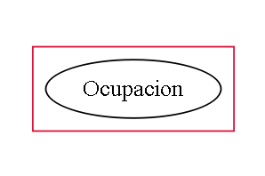
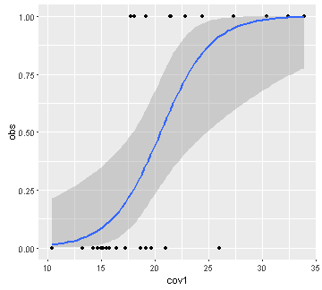

The concept of occupation and its modeling
Static model of occupation
Diego J. Lizcano, Ph.D.
OTS, Palo Verde
Models and simulations in ecology
A model in ecology is the mathematical description of an ecological system.
When the description is done with a practical purpose it is called simulation.
More about models in ecology
Simulations are simplified versions of a real system, in which we can test how certain parameters vary, affecting the estimates of other parameters.
All models are wrong but some are useful.
George Box, 1978. British statistician.
Statististics prof. Univ Princeton
Student of Egon Pearson
Box-Cox transformation
More about George Box

Why simulations are useful:
- I know the true parameters.
- They are a good way to learn.
- We can calibrate a model.
- By being able to simulate data under a certain model, it is guaranteed that one understands the model, its restrictions and limitations.
- They allow verifying the quality of the estimates, as well as the precision and the effect of the sample size.
- We can visualize how identifiable the parameters are in more complex models.

Let's do a simulation of occupancy (\(\psi\)) and detectability (p).
Imitate the way the measures of interest originate. The occupancy (\(\psi\)) and the detectability (p).
Mechanistic approximation (mechanism).
There are two processes
proc. ecological z.
Which governs the presence of the species.
- The species is (z=1), or is not (z=0) in the site. Simulated from a Bernoulli distribution.

proc. of observation y.
Which governs the observation of the species.
- The species is observed (p=1), if the species is present. Conditional probability. Simulated with a Bernoulli distribution.

It is important to understand that both processes are linked in a hierarchical way.

The ecological process (\(\psi\)) follows a Bernoulli distribution.
The observation model (\(p\)) follows a Bernoulli distribution.
The probability of occurrence is also a proportion (occupancy):
\(\psi\) = Pr(\(z_{i}\)=1)
- The probability of observing the species given that the species is present is:
\(p\) = Pr(\(y_{i}\)=1 \(\mid\) \(z_{i}\)=1)
Now let's play around with the Bernoulli distribution
is a variation of the binomial distribution
Let's vary ni and pi and see how the estimated mean (blue) approaches pi
ni<-10 # numero de datos
pi<- 0.5 # probabilidad (~proporcion de unos)
# Generemos datos con esa informacion
daber<-data.frame(estimado=rbinom(ni, 1, pi))
# Grafiquemos
library(ggplot2)
ggplot(daber, aes(x=estimado)) +
geom_histogram(aes(y=..density..), # Histograma y densidad
binwidth=.1, # Ancho del bin
colour="black", fill="white") +
geom_vline(aes(xintercept=mean(estimado, na.rm=T)),
color="blue", linetype="dashed", size=1) # media en azul
Let's change the approximation. Let's study the relationship from the data and the covariates
Relationship parameters and covariates
Occupancy and covariates
The occupancy (\(\psi\)) is a set of 1s and 0s.
Covariates can be continuous or discrete.
| sitio | psi | cov1 | cov2 | cov3 |
|---|---|---|---|---|
| 1 | 1 | 10 | 1.5 | bosque |
| 2 | 0 | 15 | 1.1 | cafe |
| 3 | 1 | 20 | 5.5 | bosque |
| 4 | 0 | 30 | 2.1 | cacao |
| 5 | 0 | 40 | 2.2 | bosque |
Logistic regression
Observation and covariates
The Observations are a set of 1s and 0s.
Covariates can be continuous or discrete.
| obs | cov1 | cov2 | cov3 |
|---|---|---|---|
| 1 | 10 | 1.5 | nublado |
| 0 | 15 | 1.1 | soleado |
| 1 | 20 | 5.5 | nublado |
| 0 | 30 | 2.1 | nublado |
| 0 | 40 | 2.2 | soleado |
Logistic regression
Logistic regression
data(mtcars)
obs<-mtcars$vs
cov1<-mtcars$mpg
table3<-cbind.data.frame (obs,cov1)
library(ggplot2)
ggplot(table3, aes(x=cov1, y=obs)) + geom_point() +
geom_smooth(method = "glm", method.args = list(family = "binomial"))

Logistic regression allows to find the relationship between a binary variable and covariates.
The logistic regression has the form:
\(y = { 1 \over 1 + e^{ -(\alpha + \beta_1 X_1 + \beta_2 X_2 + \cdots + \beta_p X_p + \epsilon) } }\)
Applying the "algebraic trick" of the logit function, it takes the form:
$ logit(y) = \alpha + \beta_1 X_1 + \beta_2 X_2 + \cdots + \beta_p X_p + \epsilon$
Putting it all together...

- Pass to occu model in unmarked
Cronograma
| Day | Topic |
|---|---|
| Tuesday 28 pm | Remembering R |
| R as model tool | |
| Wednesday 29 am | Occupancy concept |
| Intro Occu Static model - unmarked101 | |
| Wednesday 29 pm | Static Model in deep I- Sim Machalilla |
| Static Model in deep II- Data in unmarked | |
| Thursday 30 am | Questions. Real World Data - Deer |
| More models |